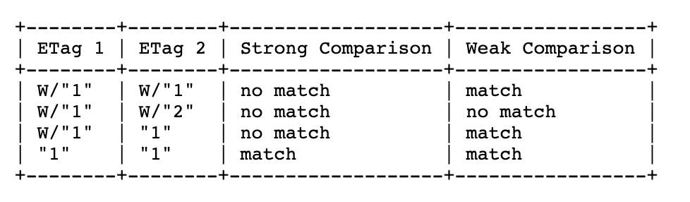

定义
先看下mdn上对缓存的定义和解释
缓存是一种保存资源副本并在下次请求时直接使用该副本的技术。当 web 缓存发现请求的资源已经被存储，它会拦截请求，返回该资源的拷贝，而不会去源服务器重新下载。这样带来的好处有：缓解服务器端压力，提升性能(获取资源的耗时更短了)。对于网站来说，缓存是达到高性能的重要组成部分。缓存需要合理配置，因为并不是所有资源都是永久不变的：重要的是对一个资源的缓存应截止到其下一次发生改变（即不能缓存过期的资源）。
缓存的种类有很多,其大致可归为两类：私有与共享缓存。共享缓存存储的响应能够被多个用户使用。私有缓存只能用于单独用户。本文将主要介绍浏览器与代理缓存，除此之外还有网关缓存、CDN、反向代理缓存和负载均衡器等部署在服务器上，为站点和 web 应用提供更好的稳定性、性能和扩展性。
规范
主要涉及到的规范有
Header字段定义
Age
1
Age: 8890
respons Header中才可能有该字段，单位为秒。有这个字段说明是该请求命中了代理缓存，比如cdn。这个值就是当前时间减去代理缓存建立的时间（respons中的Date字段）
Cache-Control
这个字段在request和respons的header中都可能出现。- request
- max-age，缓存有效时间，单位为秒。在request中使用该字段，意思是说将不会使用respons中的Age大于该值的缓存。
- max-stale，单位为秒。意思是可以使用过期时间在这个值内的缓存，如果不设置值，那意思是说，可以接收过期时间为任意值的缓存。
- min-fresh，告诉缓存服务器，可接受的缓存的过期时间必须要 > Age + min-fresh
- no-cache，不校验本地的缓存，直接请求，但是可能会命中304的规则
- no-store，告诉中间所有过程，不允许缓存任何内容包括request和respons。注意：如果请求是从一个cache中获取的，cache中现有的respons是不会被清除的。
- no-transform，告诉中间代理，不允许改变结果的媒体类型
- only-if-cached，告诉中间代理，只接受缓存响应，无缓存则返回504
- respons
- must-revalidate，忽略max-stale参数，当缓存过期时，必须向源服务器验证缓存是否有效，只适用于public
- no-store，不允许中间过程缓存任何信息
- no-cache，告诉浏览器，下次请求不校验本地的缓存，直接请求，但是可能会命中304的规则。就算返回了304，缓存中的header不能被使用，只能把body和304回来的header合并作为respons响应304的request
- no-transform，告诉中间代理，不允许改变结果的媒体类型
- public，所有中间过程都可以缓存。当在request中有Authorization字段时，给Cache-Control指定public也能让respons缓存
- private，所有中间过程不允许缓存，只有浏览器可以
- proxy-revalidate，和must-revalidate意义一样，但是这个是适用于private
- max-age，缓存有效时间，单位为秒
- s-maxage，在中间代理中，s-maxage会覆盖max-age的作用
- 可以使用扩展字段，形如：Cache-Control: private, community=”UCI”。但是扩展字段目前很少使用，因为得依赖客户端(浏览器的实现，浏览器不识别将被忽略)
- request
Expires, 服务端返回的具体的绝对时间的时间戳，精确到秒。例如：Expires: Thu, 01 Dec 1994 16:00:00 GMT。是HTTP/1.0的产物，在现代浏览器中基本没用了，一般都会用Cache-Control来替代，但是为了兼容性，一般web server还是会返回这个字段。
Pragma，HTTP/1.0，只有一种值：Pragma: no-cache；和Cache-Control: no-cache作用一样，用来兼容使用了Cache-Control的请求在HTTP/1.0的环境下能正常工作。优先级比Cache-Control低
Last-Modified/If-Modified-Since
- HTTP/1.0规定的协商缓存的方案，值是时间戳，和Expires有一样的问题，只能精确到秒。当respons中有Last-Modified时，下次request就会带上 If-Modified-Since
ETag/If-None-Match
- HTTP/1.1 用来解决Last-Modified/If-Modified-Since解决不了的问题，更准确，当有If-None-Match字段时，要忽略If-Modified-Since字段。当respons中有ETag时，下次request就会带上 If-None-Match
Vary，respons中的字段，告诉中间代理，通过缓存中的Vary标识的字段来判断，后续请求是否可以使用缓存，还是去服务器重新请求。最常见的情况是Vary: Accept-Encoding。意思就是如果request中的Accept-Encoding和缓存中的Accept-Encoding不一样的话，不能使用缓存，要重新请求。Vary: *和Cache-Control: private效果一样，就是中间代理不会缓存，每次都会去源服务器重新请求资源
If-Match/If-Unmodified-Since 这是两个和If-None-Match/If-Modified-Since出现的时机一样，但作用相反，都是在request中出现，但是一般用于PUT、POST等请求中用于校验请求是否能被处理。如果校验结果为false，则返回412 Precondition Failed。请求失败。可以避免请求丢失问题
ETag有强弱之分，我们常见的都是强ETag，弱ETag的格式是W/“1”，他们的区别可以用规范中的一张图来说明

总结
- HTTP/1.0时期的缓存解决方案是Pragma和Expires，功能单一，且Expires用的是服务端时间和客户端的时间不一致的实话，会造成时间冲突，从而造成缓存失效。
- HTTP/1.1后使用Cache-Control来控制客户端以及中间代理的缓存，Last-Modified/If-Modified-Since、ETag/If-None-Match这两组来实现协商缓存
- 注意带有Vary的响应头，可以控制中间代理是否能使用缓存来响应请求。